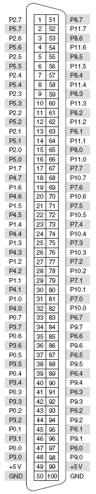
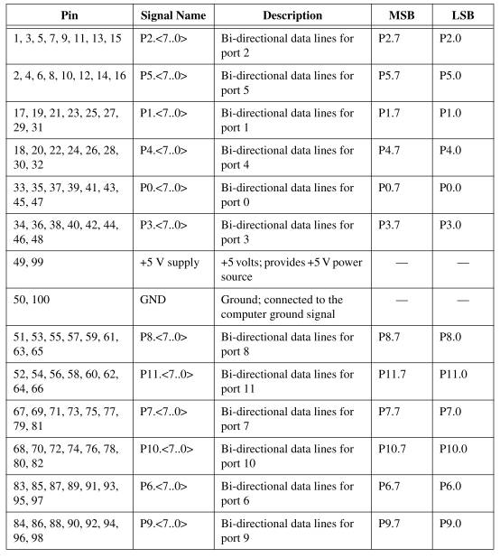
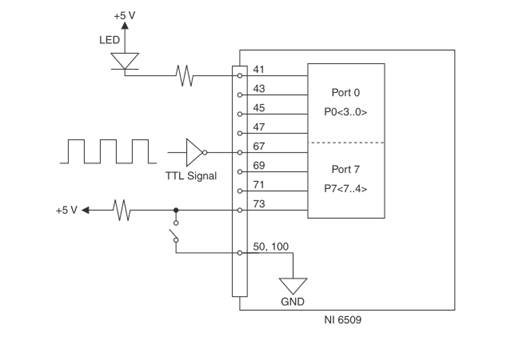
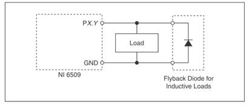

| Simpole® |
|
|
|---|
PCI6509 I/O板卡是NI公司M系列板卡成员之一，本节依据NI公司相关资料，结合在Simpole中的应用，介绍板卡硬件相关内容，包括板卡的组件、I/O口映射关系及板卡电气特性等。
具体内容如下：
PCI6509是一个具有多个通道的数字I/O类型的板卡，包括96路输入输出通道，8路为一组，双向可配置。
PCI6509 板卡与外部设备的连接是通过下面接口（SH100-100-F）实现的。
PCI6509 SimpoleD库中DI模块和DO模块与PCI6509 Board的I/O之间的映射关系如下面几个表所示。PCI6509 板卡Connector中引脚号与相应的Signal名称的对应关系如下表所示。
在使用PCI6509 DIO端口进行数字输入输出时，可参考下面的信号连接方式，其中Port 0作为数字输出，Port 7作为数字输入。数字输出可以输出TTL信号，驱动外部设备，如LED等；数字输入可以接受TTL输入，感应外部设备状态，如开关信号等。
当外接感性负载时，应该将感性负载和续流二极管并联，因为感性负载内部存储了能量，当状态切换时，产生的反向电动势有可能损害相应端口或供应电源，如下图所示。
以上介绍了PCI6509板卡各功能模块电路框图及电气特性，有关板卡的详细信息请参看NI网站。
|
PCI6509 SimpoleD Reference |
PCI6509 Implementation Guide
|
|---|